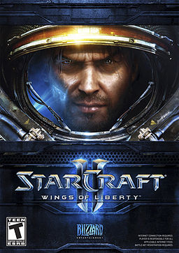

StarCraft II: Wings of Liberty

StarCraft II: Wings of Liberty (İngilizce: Yıldız zanaatı: Özgürlüğün kanatları), Blizzard Entertainment tarafından geliştiren, yine aynı firma tarafından 1998 yılında yayınlanmış StarCraft oyununun devamı niteliğindeki askeri bilimkurgu gerçek zamanlı strateji türünde bir bilgisayar oyunudur. Microsoft Windows ve Mac OS X ortamları için geliştirilen oyun, ilk paketi Wings of Liberty adında piyasaya sürülmüştür ve ek olarak Heart of the Swarm ve Legacy of the Void adlarında iki genişleme paketi çıkarılacaktır.
3 Mart 2010'da yayıncı Activision Blizzard tarafından satışa sunulacağı açıklanmış[2] ve 27 Temmuz 2010'da satışa sunulmuştur.